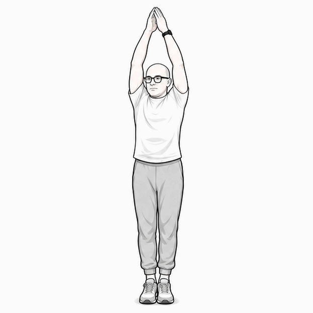
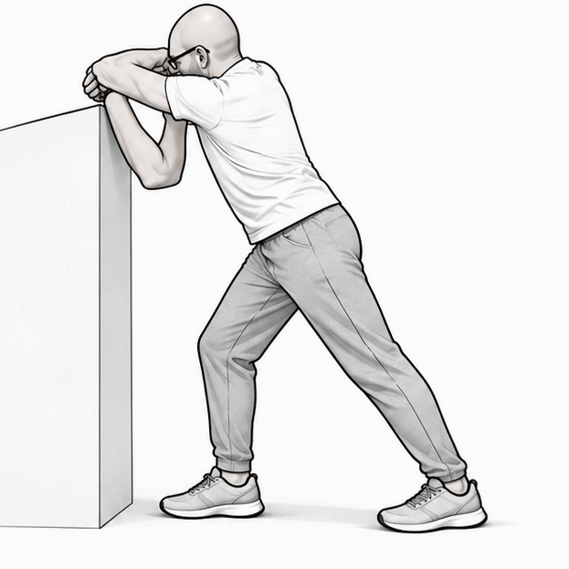
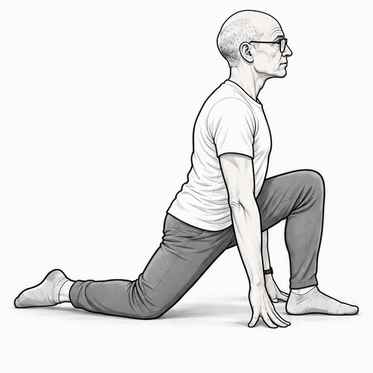
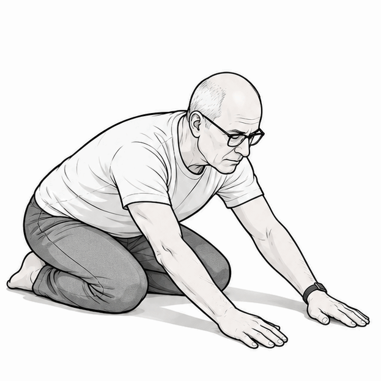
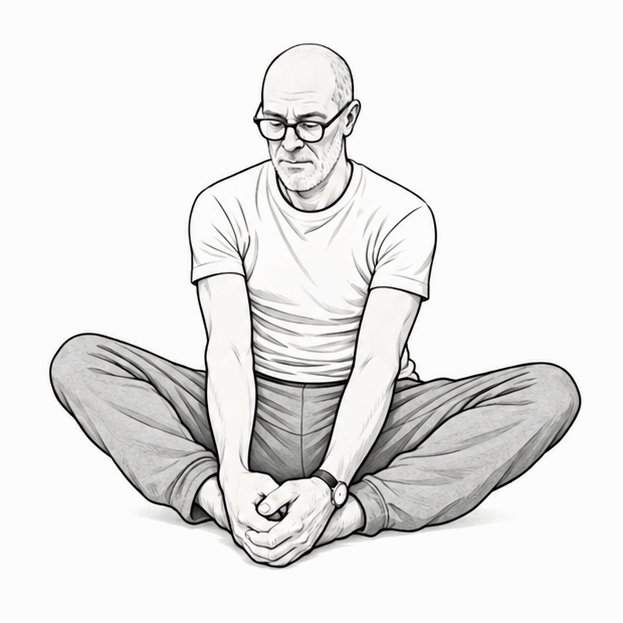
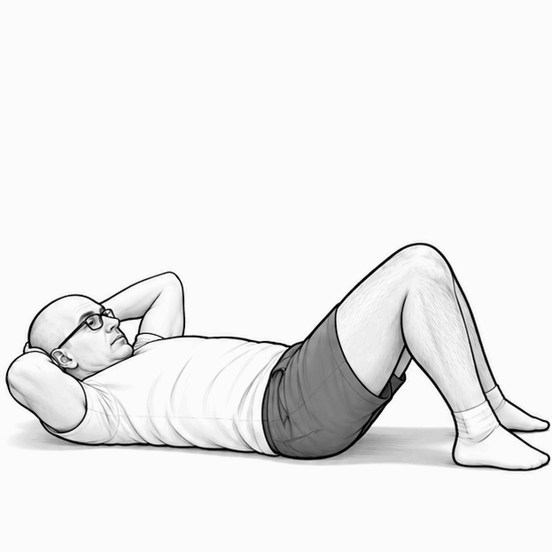
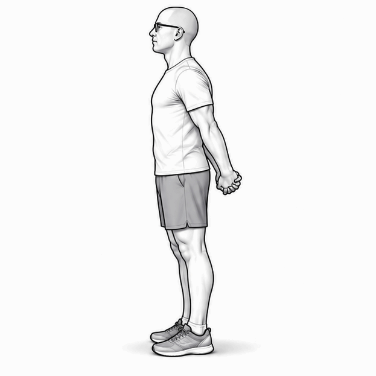
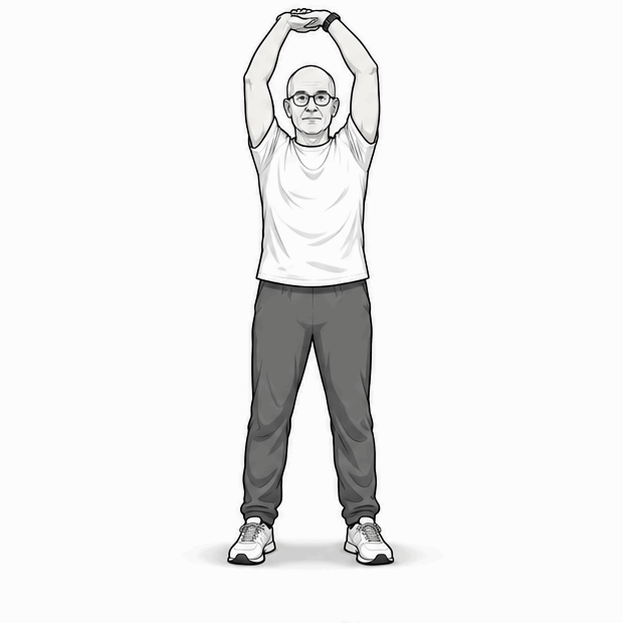
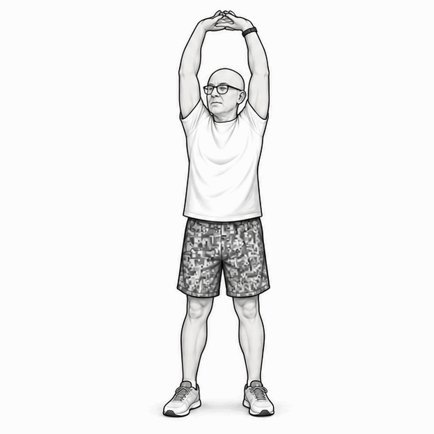
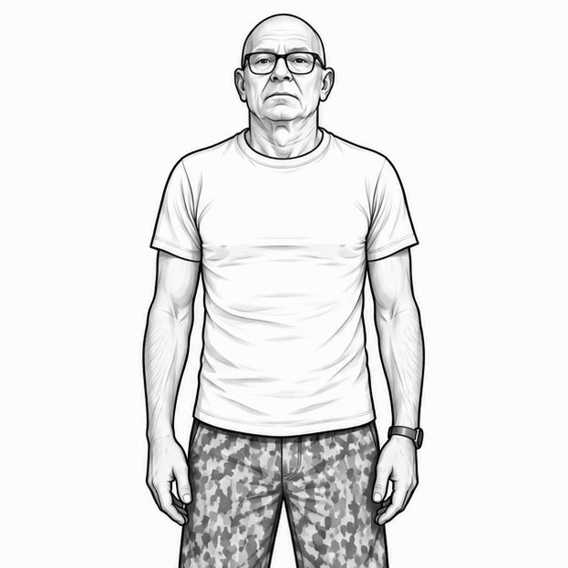

01
Allungamento in alto
Obiettivo: spalle, tronco, asse del corpo.
Esecuzione: porta le braccia verso l'alto e mantieni un allungamento confortevole.
Dose: 15–25 secondi × 2.
Prima scheda MVP costruita con illustrazioni stilizzate in bianco e nero su sfondo neutro. Pensata per repository GitHub, contenuti web e futuri percorsi formativi.
Nota: le indicazioni sono orientative e da rivedere prima di una pubblicazione definitiva o di un utilizzo didattico pubblico.

Obiettivo: spalle, tronco, asse del corpo.
Esecuzione: porta le braccia verso l'alto e mantieni un allungamento confortevole.
Dose: 15–25 secondi × 2.

Obiettivo: spalle e dorsale.
Esecuzione: avambracci su supporto stabile, accompagna il busto avanti e in basso senza forzare.
Dose: 15–25 secondi × 2 per lato.

Obiettivo: mobilità dell'anca.
Esecuzione: sposta dolcemente il bacino in avanti con un ginocchio a terra.
Dose: 15–25 secondi × 2 per lato.

Obiettivo: schiena e rilascio del tronco.
Esecuzione: siediti verso i talloni e allunga le braccia in avanti respirando lentamente.
Dose: 20–30 secondi × 2.

Obiettivo: anche e interno cosce.
Esecuzione: unisci le piante dei piedi e lascia scendere le ginocchia senza forzare.
Dose: 20–30 secondi × 2.

Obiettivo: attivazione del tronco.
Esecuzione: solleva leggermente testa e spalle espirando senza tirare il collo.
Dose: 6–10 ripetizioni lente.

Obiettivo: torace e cintura scapolare.
Esecuzione: intreccia le mani dietro la schiena e accompagna le braccia indietro.
Dose: 15–20 secondi × 2.

Obiettivo: mobilità laterale del tronco.
Esecuzione: inclina il busto lateralmente mantenendo stabile il bacino.
Dose: 15–20 secondi × 2 per lato.

Obiettivo: braccia, spalle e asse del corpo.
Esecuzione: porta le mani unite sopra la testa e mantieni un'estensione comoda.
Dose: 15–20 secondi × 2.

Obiettivo: percezione del cingolo scapolare.
Esecuzione: solleva lentamente le spalle e poi rilasciale in modo controllato.
Dose: 8–12 ripetizioni.